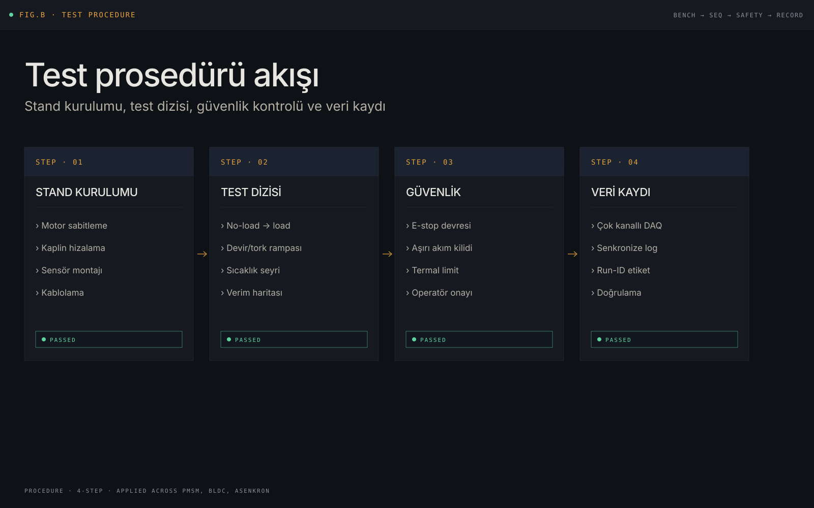
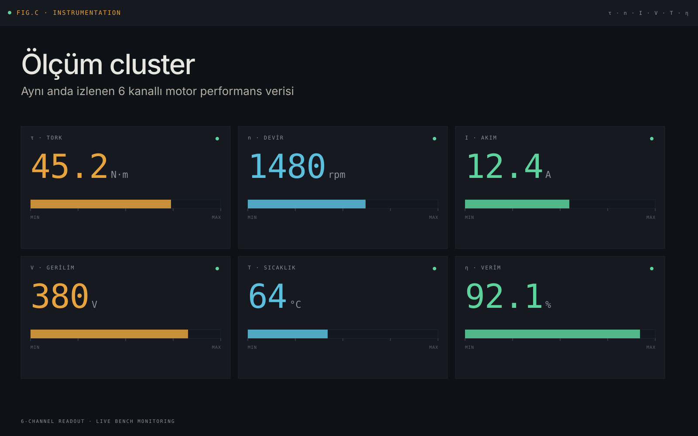
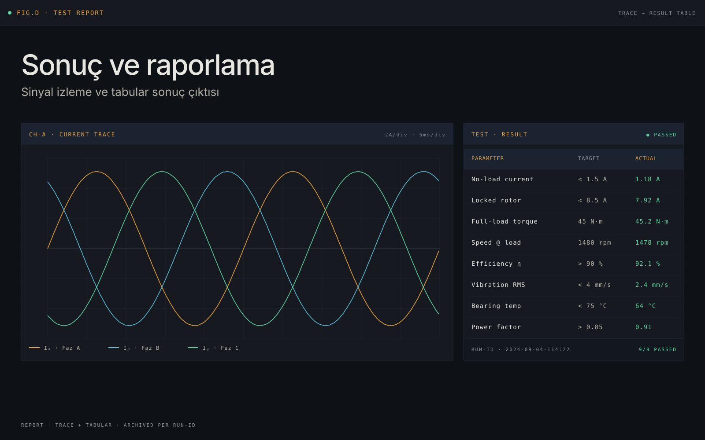

Ana sayfaya dön
PMSM, BLDC ve asenkron motorlarda test ve doğrulama
PMSM, BLDC, asenkron ve dalgıç pompa motorlarının test süreçlerinde yer alındı. Amaç, ölçüm disiplinini koruyarak motor davranışını teknik olarak doğrulamak ve sonucu raporlanabilir hale getirmekti.
CASE/MOTOR-TEST
KategoriMotor Testi
MotorlarPMSM·BLDC·IM
StandDinamometre
Test pratiği
Çalışma; PMSM, BLDC, asenkron ve dalgıç pompa motorlarının test süreçlerinde görev almayı kapsıyordu. Her motor tipi için prosedür takibi, ölçüm alma ve performans değerlendirmesi ön plandaydı.
Test standı hazırlığı, güvenlik ve prosedür kontrolü, ölçüm cihazlarının kullanımı ve veri kaydı belirli bir düzen içinde yürütüldü. Ölçüm sonuçları farklı motor tipleri ve çalışma koşulları arasında karşılaştırılarak performans doğrulaması için teknik sonuca dönüştürüldü.
Araçlar
Süreç şematikleri



